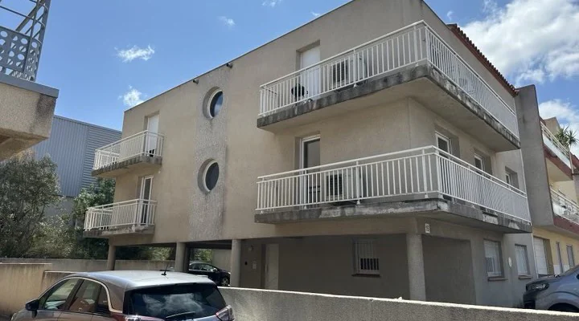
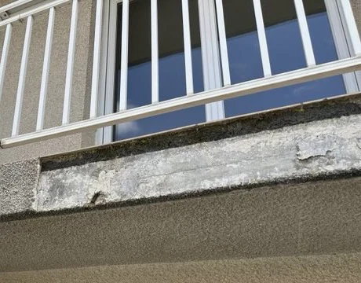
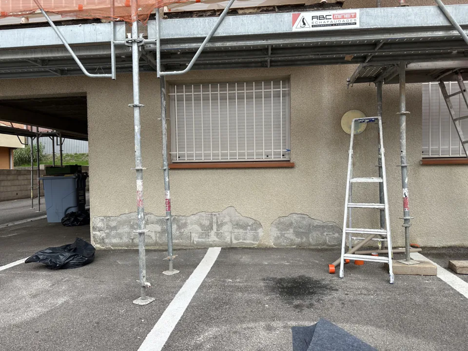
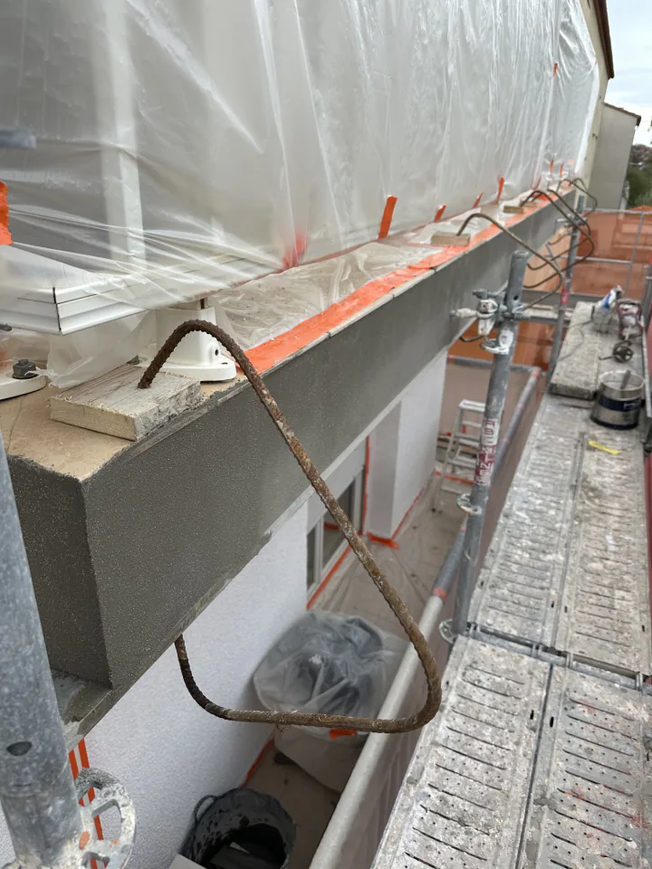
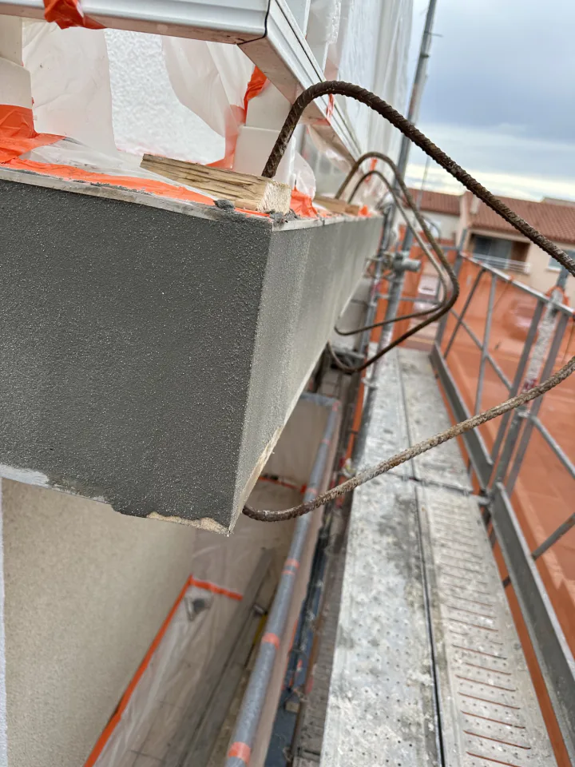
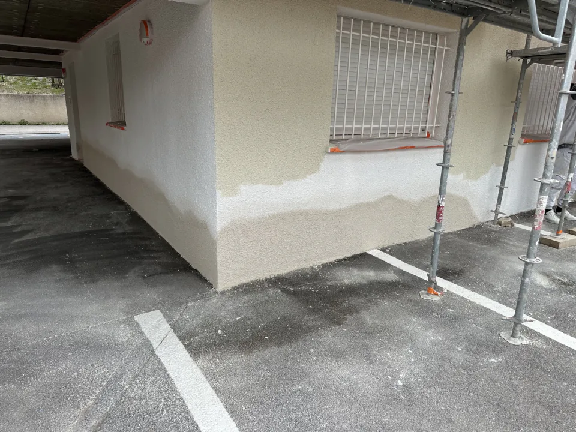
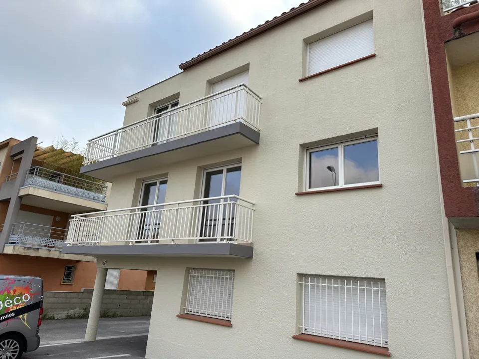

Des supports dégradés, surtout au niveau des balcons
Ce chantier nécessitait une remise en état approfondie de plusieurs supports présentant des fissures et des dégradations, particulièrement au niveau des balcons.




Style & Déco a réalisé la rénovation des façades d'un immeuble résidentiel situé à Perpignan, dans les Pyrénées-Orientales.

Ce chantier nécessitait une remise en état approfondie de plusieurs supports présentant des fissures et des dégradations, particulièrement au niveau des balcons.


Après l'installation d'un échafaudage par une entreprise spécialisée, nous avons réalisé un nettoyage à haute pression, suivi d'un traitement anti-mousse pour préparer les façades aux travaux de rénovation.

Une attention particulière a été portée à la réparation des supports. Les fissures et les parties dégradées des balcons ont fait l'objet de reprises adaptées, comprenant notamment la préparation des armatures métalliques par grattage et brossage, puis l'application d'un traitement passivant anticorrosion.


Les conditions venteuses ont également nécessité une organisation rigoureuse des protections au sol, installées chaque matin et retirées en fin de journée.
Une fois les supports réparés et préparés, nous avons appliqué un primaire fixateur, suivi de deux couches de peinture de façade de classe D2, afin d'obtenir une finition homogène et soignée.

Cette réalisation illustre notre savoir-faire en ravalement de façade à Perpignan, depuis le traitement des dégradations jusqu'aux travaux de peinture extérieure, avec une attention constante portée à la préparation des supports et à la qualité des finitions.
Assurés en responsabilité civile professionnelle et en décennale, pour les activités déclarées à nos contrats. Attestations sur demande.
Retrouvez nos autres chantiers dans la galerie des réalisations, ou découvrez notre service de ravalement de façade et notre page peintre en bâtiment à Perpignan.
